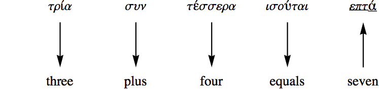
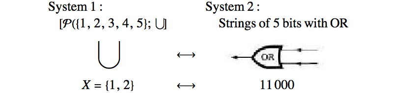
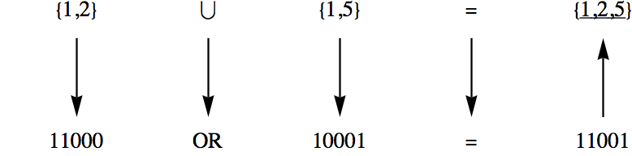
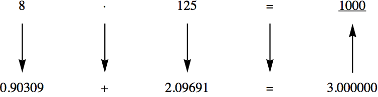
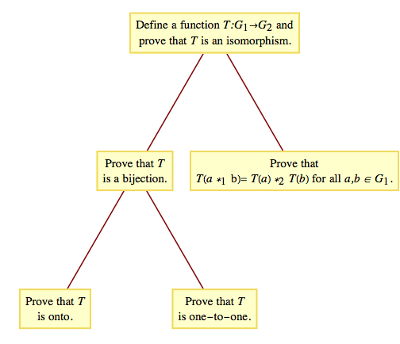

Ken Levasseur, Al Doerr, Michiel Smid, Oscar Levin, Charles M. Grinstead, J. Laurie Snell, Eric Lehman, F. Thomson Leighton, Albert R Meyer, Jeff Erickson, Kenneth P. Bogart, Carol Chritchlow, David Eck, OpenDSA Project, L.J. Miller
The following informal definition of isomorphic systems should be memorized. No matter how technical a discussion about isomorphic systems becomes, keep in mind that this is the essence of the concept.
Two algebraic systems are isomorphic if there exists a translation rule between them so that any true statement in one system can be translated to a true statement in the other.
Imagine that you are a six-year-old child who has been reared in an English-speaking family, has moved to Greece, and has been enrolled in a Greek school. Suppose that your new teacher asks the class to do the following addition problem that has been written out in Greek.
The natural thing for you to do is to take out your Greek-English/English-Greek dictionary and translate the Greek words to English, as outlined in Figure 11.7.3 After you've solved the problem, you can consult the same dictionary to find the proper Greek word that the teacher wants. Although this is not the recommended method of learning a foreign language, it will surely yield the correct answer to the problem. Mathematically, we may say that the system of Greek integers with addition (\(\sigma \upsilon \nu\)) is isomorphic to English integers with addition (plus). The problem of translation between natural languages is more difficult than this though, because two complete natural languages are not isomorphic, or at least the isomorphism between them is not contained in a simple dictionary.

Figure11.7.3.Solution of a Greek arithmetic problem
In this example, we will describe how set variables can be implemented on a computer. We will describe the two systems first and then describe the isomorphism between them.
System 1: The power set of \(\{1, 2, 3, 4, 5\}\) with the operation union, \(\cup\text{.}\) For simplicity, we will only discuss union. However, the other operations are implemented in a similar way.
System 2: Strings of five bits of computer memory with an OR gate. Individual bit values are either zero or one, so the elements of this system can be visualized as sequences of five 0's and 1's. An OR gate, Figure 11.7.5, is a small piece of computer hardware that accepts two bit values at any one time and outputs either a zero or one, depending on the inputs. The output of an OR gate is one, except when the two bit values that it accepts are both zero, in which case the output is zero. The operation on this system actually consists of sequentially inputting the values of two bit strings into the OR gate. The result will be a new string of five 0's and 1's. An alternate method of operating in this system is to use five OR gates and to input corresponding pairs of bits from the input strings into the gates concurrently.

Figure11.7.5.Translation between sets and strings of bits
The Isomorphism: Since each system has only one operation, it is clear that union and the OR gate translate into one another. The translation between sets and bit strings is easiest to describe by showing how to construct a set from a bit string. If \(a_1a_2a_3a_4a_5\text{,}\) is a bit string in System 2, the set that it translates to contains the number \(k\) if and only if \(a_k\) equals 1. For example, \(10001\) is translated to the set \(\{1, 5\}\text{,}\) while the set \(\{1, 2\}\) is translated to \(11000.\) Now imagine that your computer is like the child who knows English and must do a Greek problem. To execute a program that has code that includes the set expression \(\{1, 2\} \cup \{1, 5\}\text{,}\) it will follow the same procedure as the child to obtain the result, as shown in Figure 11.7.6.

Figure11.7.6.Translation of a problem in set theory
This isomorphism is between\(\left[\mathbb{R}^+ ; \cdot \right]\) and \([\mathbb{R};+]\text{.}\) Until the 1970s, when the price of calculators dropped, multiplication and exponentiation were performed with an isomorphism between these systems. The isomorphism \(\left(\mathbb{R}^+\right.\) to \(\mathbb{R}\)) between the two groups is that \(\cdot\) is translated into \(+\) and any positive real number \(a\) is translated to the logarithm of \(a\text{.}\) To translate back from \(\mathbb{R}\) to \(\mathbb{R}^+\) , you invert the logarithm function. If base ten logarithms are used, an element of \(\mathbb{R}\) , \(b\text{,}\) will be translated to \(10^b\text{.}\) In pre-calculator days, the translation was done with a table of logarithms or with a slide rule. An example of how the isomorphism is used appears in Figure 11.7.8 .

Figure11.7.8.Multiplication using logarithms
The following definition of an isomorphism between two groups is a more formal one that appears in most abstract algebra texts. At first glance, it appears different, it is really a slight variation on the informal definition. It is the common definition because it is easy to apply; that is, given a function, this definition tells you what to do to determine whether that function is an isomorphism.
Definition11.7.9.Group Isomorphism.
If \(\left[G_1 ; \bullet_1\right]\) and \(\left[G_2 ; \bullet_2\right]\) are groups, \(f: G_1 \to G_2\) is an isomorphism from \(G_1\) into \(G_2\) if:
\(f\) is a bijection, and
\(f\left(a \bullet_1 b\right) = f(a) \bullet_2f(b)\) for all \(a,
b\in G_1\)
If such a function exists, then we say \(G_1\) is isomorphic to \(G_2\text{,}\) denoted \(G_1 \cong G_2\text{.}\)

Figure11.7.10.Steps in proving that \(G_1\) and \(G_2\) are isomorphic
Note11.7.11.
There could be several different isomorphisms between the same pair of groups. Thus, if you are asked to demonstrate that two groups are isomorphic, your answer need not be unique.
Any application of this definition requires a procedure outlined in Figure 11.7.10. The first condition, that an isomorphism be a bijection, reflects the fact that every true statement in the first group should have exactly one corresponding true statement in the second group. This is exactly why we run into difficulty in translating between two natural languages. To see how Condition (b) of the formal definition is consistent with the informal definition, consider the function \(L:\mathbb{R}^+\to \mathbb{R}\) defined by \(L(x)
= \log _{10}x\text{.}\) The translation diagram between \(\mathbb{R}^+\) and \(\mathbb{R}\) for the multiplication problem \(a \cdot b\) appears in Figure 11.7.12. We arrive at the same result by computing \(L^{-1} (L(a) + L(b))\) as we do by computing \(a \cdot b\text{.}\) If we apply the function \(L\) to the two results, we get the same image:
since \(L\left(L^{-1}(x)\right) = x\text{.}\) Note that (11.7.1) is exactly Condition b of the formal definition applied to the two groups \(\mathbb{R}^+\) and \(\mathbb{R}\text{.}\)
Figure11.7.12.General Multiplication using logarithms
Consider \(G= \left\{\left.\left(
\begin{array}{cc}
1 & a \\
0 & 1 \\
\end{array}
\right) \right| a \in \mathbb{R}\right\}\) with matrix multiplication. The group \([\mathbb{R};+]\) is isomorphic to \(G\text{.}\) Our translation rule is the function \(f: \mathbb{R} \to G\) defined by \(f(a)=\left(
\begin{array}{cc}
1 & a \\
0 & 1 \\
\end{array}
\right)\text{.}\) Since groups have only one operation, there is no need to state explicitly that addition is translated to matrix multiplication. That \(f\) is a bijection is clear from its definition.
We can apply this translation rule to determine the inverse of a matrix in \(G\text{.}\) We know that \(a + (-a)=0\) is a true statement in \(\mathbb{R}\text{.}\) Using \(f\) to translate this statement, we get
The next theorem summarizes some of the general facts about group isomorphisms that are used most often in applications. We leave the proof to the reader.
Theorem11.7.14.Properties of Isomorphisms.
If \([G;\bullet ]\) and \([H;\diamond ]\) are groups with identities \(e\) and \(e'\text{,}\) respectively, and \(T:G \to H\) is an isomorphism from \(G\) into \(H\text{,}\) then:
\(\displaystyle T(e) = e'\)
\(T(a)^{-1} = T\left(a^{-1}\right)\) for all \(a \in G\text{,}\) and
If \(K\) is a subgroup of \(G\text{,}\) then \(T(K) = \{T(a) : a \in
K\}\) is a subgroup of \(H\) and is isomorphic to \(K\text{.}\)
“Is isomorphic to” is an Definition 10.3.11 on the set of all groups. Therefore, the set of all groups is partitioned into equivalence classes, each equivalence class containing groups that are isomorphic to one another.
Subsection11.7.2Conditions for groups to not be isomorphic
How do you decide that two groups are not isomorphic to one another? The negation of “\(G\) and \(H\) are isomorphic” is that no translation rule between \(G\) and \(H\) exists. If \(G\) and \(H\) have different cardinalities, then no bijection from \(G\) into \(H\) can exist. Hence they are not isomorphic. Given that \(\left|
G\right| =\left| H\right|\text{,}\) it is usually impractical to list all bijections from \(G\) into \(H\) and show that none of them satisfy Condition b of the formal definition. The best way to prove that two groups are not isomorphic is to find a true statement about one group that is not true about the other group. We illustrate this method in the following checklist that you can apply to most pairs of non-isomorphic groups in this book.
Assume that \([G;\bullet ]\) and \([H;\diamond ]\) are groups. The following are reasons for \(G\) and \(H\) to be not isomorphic.
\(G\) and \(H\) do not have the same cardinality. For example, \(\mathbb{Z}_{12}
\times \mathbb{Z}_5\) can't be isomorphic to \(\mathbb{Z}_{50}\) and \([\mathbb{R};+]\) can't be isomorphic to \(\left[\mathbb{Q}^+ ; \cdot \right]\text{.}\)
\(G\) is abelian and \(H\) is not abelian since \(a \bullet b = b
\bullet a\) is always true in \(G\text{,}\) but \(T(a) \diamond T(b) = T(b) \diamond T(a)\) would not always be true. We have seen two groups with six elements that apply here. They are \(\mathbb{Z}_6\) and the group of \(3 \times 3\) rook matrices (see Exercise 11.2.4.5). The second group is non-abelian, therefore it can't be isomorphic to \(\mathbb{Z}_6\text{.}\)
\(G\) has a certain kind of subgroup that \(H\) doesn't have. Part (c) of Theorem 11.7.14 states that this cannot happen if \(G\) is isomorphic to \(H\text{.}\)\(\left[\mathbb{R}^* ; \cdot
\right]\) and \(\left[\mathbb{R}^+ ; \cdot \right]\) are not isomorphic since \(\mathbb{R}^*\) has a subgroup with two elements, \(\{-1, 1\}\text{,}\) while the proper subgroups of \(\mathbb{R}^+\) are all infinite (convince yourself of this fact!).
The number of solutions of \(x \bullet x = e\) in \(G\) is not equal to the number of solutions of \(y \diamond y = e'\) in \(H\text{.}\)\(\mathbb{Z}_8\) is not isomorphic to \(\mathbb{Z}_2{}^3\) since \(x +_8 x = 0\) has two solutions, 0 and 4, while \(y + y = (0, 0, 0)\) is true for all \(y\in \mathbb{Z}_2{}^3\text{.}\) If the operation in \(G\) is defined by a table, then the number of solutions of \(x
\bullet x = e\) will be the number of occurrences of \(e\) in the main diagonal of the table. The equations \(x^3 = e\text{,}\)\(x^4= e, \dots\) can also be used in the same way to identify pairs of non-isomorphic groups.
One of the cyclic subgroups of \(G\) equals \(G\) (i. e., \(G\) is cyclic), while none of \(H\)'s cyclic subgroups equals \(H\) (i. e., \(H\) is noncyclic). This is a special case of Condition c. \(\mathbb{Z}\) and \(\mathbb{Z}
\times \mathbb{Z}\) are not isomorphic since \(\mathbb{Z} = \langle 1\rangle\) and \(\mathbb{Z}
\times \mathbb{Z}\) is not cyclic.
Exercises11.7.3Exercises
1.
State whether each pair of groups below is isomorphic. For each pair that is, give an isomorphism; for those that are not, give your reason.
\(\mathbb{Z} \times \mathbb{R}\) and \(\mathbb{R} \times
\mathbb{Z}\)
\(\mathbb{Z}_2\times \mathbb{Z}\) and \(\mathbb{Z} \times
\mathbb{Z}\)
\(\mathbb{R}\) and \(\mathbb{Q} \times \mathbb{Q}\)
\(\mathcal{P}(\{1, 2\})\) with symmetric difference and \(\mathbb{Z}_2{}^2\)
\(\mathbb{Z}_2{}^2\) and \(\mathbb{Z}_4\)
\(\mathbb{R}^4\) and \(M_{2\times 2}(\mathbb{R})\) with matrix addition
\(\mathbb{R}^2\) and \(\mathbb{R} \times \mathbb{R}^+\)
\(\mathbb{Z}_2\) and the \(2 \times 2\) rook matrices
\(\mathbb{Z}_6\) and \(\mathbb{Z}_2\times \mathbb{Z}_3\)
Consider three groups \(G_1\text{,}\)\(G_2\text{,}\) and \(G_3\) with operations \(\bullet
, \diamond , \textrm{ and } \star \text{,}\) respectively. We want to show that if \(G_1\) is isomorphic to \(G_2\text{,}\) and if \(G_2\) is isomorphic to \(G_3\) , then \(G_1\) is isomorphic to \(G_3\text{.}\)
If we compose \(g\) with \(f\text{,}\) we get the function \(g\circ f:G_1\to G_3\text{,}\) By Theorem 8.3.6 and Theorem 8.3.7, \(g\circ f\) is a bijection, and if \(a,b\in G_1\text{,}\)
\begin{equation*}
\begin{split}
(g\circ f)(a\bullet b) &=g(f(a\bullet b))\\
&=g(f(a)\diamond f(b))\quad \textrm{ since } f \textrm{ is an
isomorphism}\\
& =g(f(a))\star g(f(b))\quad \textrm{ since } g \textrm{ is an
isomorphism}\\
& =(g\circ f)(a) \star (g\circ f)(b)
\end{split}
\end{equation*}
Therefore, \(g\circ f\) is an isomorphism from \(G_1\) into \(G_3\text{,}\) proving that “is isomorphic to” is transitive.
4.
Write out the operation table for \(G = [\{1, -1, i, -i \}; \cdot ]\) where \(i\) is the complex number for which \(i^2 = - 1\text{.}\) Show that \(G\) is isomorphic to \(\left[\mathbb{Z}_4;+_4\right]\) .
Solve \(x^2= -1\) in \(G\) by first translating the equation to \(\mathbb{Z}_4\) , solving the equation in \(\mathbb{Z}_4\text{,}\) and then translating back to \(G\text{.}\)
5.
The two groups \(\left[\mathbb{Z}_4;+_4\right]\) and \(\left[U_5;\times
_5\right]\) are isomorphic. One isomorphism \(T:\mathbb{Z}_4\to U_5\) is partially defined by \(T(1)=3\text{.}\) Determine the values of \(T(0)\text{,}\)\(T(2)\text{,}\) and \(T(3)\text{.}\)
By Theorem 11.7.14(a), \(T(0)\) must be 1. \(T(2)=T(1+_4 1)=T(1)\times_5 T(1) = 3 \times_5 3 = 4\text{.}\) Since \(T\) is a bijection, \(T(3)=2\text{.}\)
Let \(G\) be an infinite cyclic group generated by \(a\text{.}\) Then, using multiplicative notation, \(G=\left\{\left.a^n\right| n\in \mathbb{Z}\right\}\text{.}\) The map \(T: G \rightarrow \mathbb{Z}\) defined by \(T\left(a^n\right)=n\) is an isomorphism. This is indeed a function, since \(a^n=a^m\) implies \(n
=m\text{.}\) Otherwise, \(a\) would have a finite order and would not generate \(G\text{.}\)
\(T\) is one-to-one, since \(T\left(a^n\right) =
T\left(a^m\right)\) implies \(n = m\text{,}\) so \(a^n= a^m\text{.}\)
\(T\) is onto, since for any \(n\in \mathbb{Z}\text{,}\)\(T\left(a^n\right)
= n\text{.}\)
Prove that \(\mathbb{R}^* \) is isomorphic to \(\mathbb{Z}_2
\times \mathbb{R}\text{.}\)
Describe how multiplication of nonzero real numbers can be accomplished doing only additions and translations.
9.
Prove that if \(G\) is any group and \(g\) is some fixed element of \(G\text{,}\) then the function \(\phi _g\) defined by \(\phi_g(x) = g\bullet x\bullet
g^{-1}\) is an isomorphism from \(G\) into itself. An isomorphism of this type is called an inner automorphism.
10.
It can be shown that there are five non-isomorphic groups of order eight. You should be able to describe at least three of them. Do so without use of tables. Be sure to explain why they are not isomorphic.
\(\mathbb{Z}_8\text{,}\)\(\mathbb{Z}_2\times \mathbb{Z}_4\) , and \(\mathbb{Z}_2^3\text{.}\) One other is the fourth dihedral group, introduced in Section 15.3.